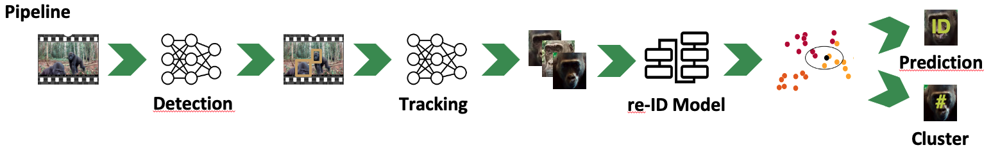
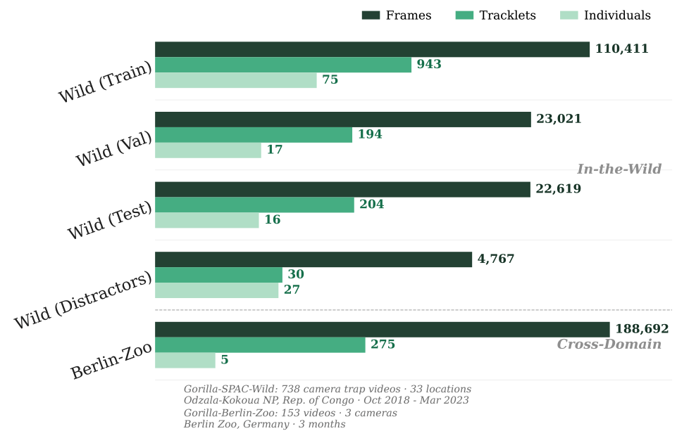
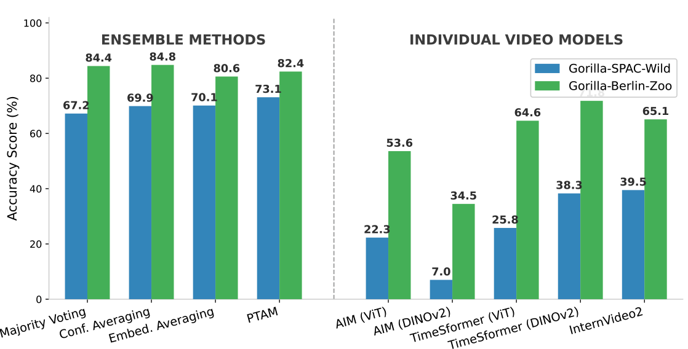

GorillaWatch: An Automated System for In-the-Wild Gorilla Re-Identification and Population Monitoring
Abstract
Monitoring critically endangered western lowland gorillas is currently hampered by the immense manual effort required to re-identify individuals from vast archives of camera trap footage. The primary obstacle to automating this process has been the lack of large-scale, "in-the-wild" video datasets suitable for training robust deep learning models. To address this gap, we introduce a comprehensive benchmark with three novel datasets: Gorilla-SPAC-Wild, the largest video dataset for wild primate re-identification to date; Gorilla-Berlin-Zoo, for assessing cross-domain re-identification generalization; and Gorilla-SPAC-MoT, for evaluating multi-object tracking in camera trap footage. Building on these datasets, we present GorillaWatch, an end-to-end pipeline integrating detection, tracking, and re-identification. To exploit temporal information, we introduce a multi-frame self-supervised pretraining strategy that leverages consistency in tracklets to learn domain-specific features without manual labels. To ensure scientific validity, a differentiable adaptation of AttnLRP verifies that our model relies on discriminative biometric traits rather than background correlations. Extensive benchmarking subsequently demonstrates that aggregating features from large-scale image backbones outperforms specialized video architectures. Finally, we address unsupervised population counting by integrating spatiotemporal constraints into standard clustering to mitigate over-segmentation. We publicly release all code and datasets to facilitate scalable, non-invasive monitoring of endangered species
Key Contributions
① Novel Benchmark Datasets
We introduce three novel datasets for open-set primate re-identification and tracking, enabling systematic evaluation of gorilla monitoring systems.
② Multi-Frame Self-Supervised Learning
We propose a multi-frame self-supervised pretraining strategy which leverages temporal consistency in tracklets without manual labels.
③ Ensemble Superiority
We demonstrate that aggregating features from large-scale image backbones outperforms specialized video architectures for gorilla re-identification.
④ Spatiotemporal Constrained Clustering
We address unsupervised population counting via spatiotemporal constrained clustering, reducing over-segmentation in real-world scenarios.
Pipeline Overview
Our end-to-end GorillaWatch pipeline consists of four main stages:
- Detection: Automated gorilla detection in camera trap footage
- Tracking: Multi-object tracking to maintain individual identities across frames
- re-ID Model: Deep learning-based feature extraction for individual recognition
- Constrained Clustering: Spatiotemporal clustering for population counting and identity prediction
Key Results
Spatiotemporal Constrained vs. Unconstrained Clustering
| Method | ARI ↑ | AMI ↑ | # Clusters |
|---|---|---|---|
| Unconstrained | |||
| HAC | 0.606 | 0.728 | 465 |
| DBSCAN | 0.379 | 0.625 | 341 |
| HDBSCAN | 0.114 | 0.510 | 113 |
| Constrained (Spatiotemporal) | |||
| HAC | 0.837 | 0.891 | 17 ✓ |
| DBSCAN | 0.586 | 0.873 | 13 |
| HDBSCAN | 0.184 | 0.677 | 204 |
Spatiotemporal constrained clustering significantly improves accuracy and reduces over-segmentation, with HAC achieving the best performance.
Comprehensive Analyses
🔍 Tracker Comparison
Detailed comparison of state-of-the-art multi-object tracking methods evaluated on our Gorilla-SPAC-Multi-Object-Tracking dataset.
🧠 Backbone Zero-Shot Benchmark
Systematic comparison of pre-trained embedding models, demonstrating that ensemble methods outperform specialized video models for gorilla re-identification.
📊 DINOv2 Scaling Analysis
Accuracy vs. model size analysis (Small → Giant) after fine-tuning, showing performance improvements across model scales.
🎬 Video Architecture Deep-Dive
Full results including the effect of replacing standard Vision Transformers with DINOv2 backbones in video architectures.
Visual Overview

Pipeline Architecture: End-to-end workflow from Detection → Tracking → re-ID Model → Clustering for ID Prediction.

Dataset Scale: 110K+ frames from wild camera traps and zoo videos across multiple locations.

Key Finding: Ensemble methods (84.8% accuracy) significantly outperform individual video models.
BibTeX
@inproceedings{schall2026gorillawatch,
title={GorillaWatch: An Automated System for In-the-Wild Gorilla Re-Identification and Population Monitoring},
author={Schall, Maximilian and Kn{\"o}fel, Felix Leonard and K{\"o}nig, Noah Elias and Kubeler, Jan Jonas and von Klinski, Maximilian and Linnemann, Joan Wilhelm and Liu, Xiaoshi and Schlegelmilch, Iven Jelle and Woyciniuk, Ole and Kudaeva, Alexandra and Wasmuht, Dante and Bermejo Espinet, Magdalena and Illera Basas, German and de Melo, Gerard},
booktitle={Proceedings of the IEEE/CVF Winter Conference on Applications of Computer Vision (WACV)},
year={2026},
url={https://gorilla-watch.github.io}
}